Kişiye özel planlama
Tedavi kararlarını ihtiyaçlarınıza, klinik durumunuza ve beklentilerinize göre birlikte oluştururuz.
KAYA ALP AĞIZ VE DİŞ SAĞLIĞI
Modern klinik altyapımız ve uzman hekim kadromuzla ağız ve diş sağlığınızı özenle, bütüncül bir perspektifle takip ediyoruz.

Dijital teknoloji Hassas tanı, şeffaf planlama
Uzman kadro Multidisipliner yaklaşım
Hasta odaklılık Konforlu tedavi deneyimi
KURUMSAL YAKLAŞIM
Her ziyaretin kendine özgü olduğunu biliyoruz. Kaya Alp’te planlama; ihtiyaçlarınızı dinleyerek, klinik verileri dikkatle değerlendirerek ve tüm süreci anlaşılır kılarak başlar.
Kaya Alp farkını keşfedinTEDAVİ ALANLARIMIZ
Güncel tedavi yöntemlerini, sizi merkeze alan bir iletişimle bir araya getiriyoruz.
Eksik dişlerin fonksiyon ve estetiğini uzun ömürlü çözümlerle yeniden kazandırıyoruz.
Tedavi bilgileriYüzünüze, karakterinize ve beklentilerinize uyumlu doğal gülüşler planlıyoruz.
Tedavi bilgileriŞeffaf plak ve modern ortodontik yaklaşımlarla dengeli diş dizilimi hedefliyoruz.
Tedavi bilgileriDişinizi korumaya odaklanan, büyütme destekli hassas kanal tedavileri sunuyoruz.
Tedavi bilgileri“Sağlıklı bir gülüş, iyi bir yaşamın en doğal parçasıdır.” Kaya Alp klinik felsefesi

Her aşamada
şeffaf iletişim.
NEDEN KAYA ALP?
Tedavi kararlarını ihtiyaçlarınıza, klinik durumunuza ve beklentilerinize göre birlikte oluştururuz.
Dijital ölçüden tanı teknolojilerine kadar süreçleri daha öngörülebilir hale getiririz.
Her adımı anlaşılır biçimde paylaşır; kendinizi güvende hissetmenizi önemseriz.
HEKİMLERİMİZ
SAĞLIK REHBERİ
RANDEVU TALEBİ
Formu tamamladığınızda e-posta uygulamanız açılır ve randevu talebiniz doğrudan kliniğimize iletilir. Ekibimiz en kısa sürede sizinle iletişime geçer.
İLETİŞİM
KAYA ALP DİŞ KLİNİĞİ


Gülümsemeleri çoğaltan bir ekibin parçası olmaya ne dersin?
Detaylı Bilgi
Çocuklara yönelik ağız ve diş sağlığı uygulamalarını inceleyin.
Detaylı BilgiKAYA ALP DİŞ KLİNİĞİ

Diş Hekimi

Diş Hekimi

Diş Hekimi

Diş Hekimi

Diş Hekimi
Kurucu Yönetim Kurulu Üyesi

Çerkezköy Klinik Başhekimi
Diş Hekimi
YK. Başkanı

Diş Hekimi
YK. Üyesi

Lüleburgaz Klinik Başhekimi
Lüleburgaz Co-Owner

Maslak Klinik Başhekimi
İlgilendiği Alanlar: Periodontoloji
Maslak Co-Owner

Çorlu Klinik Başhekimi
Çorlu Co-Owner

İlgilendiği Alanlar: Ağız, Diş ve Çene Cerrahisi
Maslak Co-Owner

İlgilendiği Alanlar: Ortodonti
Maslak Co-Owner

Protez Uzmanı

Pedodonti Uzmanı

Protez Uzmanı

Periodontoloji Uzmanı

Endodonti Uzmanı

İlgilendiği Alanlar: Ortodonti

İlgilendiği Alanlar: Endodonti

Diş Hekimi

Diş Hekimi

Diş Hekimi

Diş Hekimi

Diş Hekimi

Diş Hekimi

Diş Hekimi

Diş Hekimi